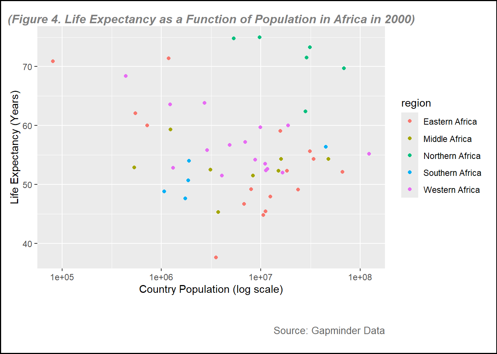
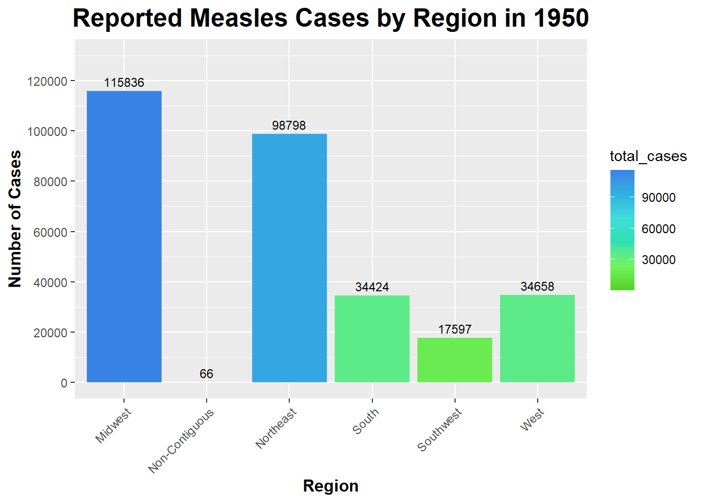
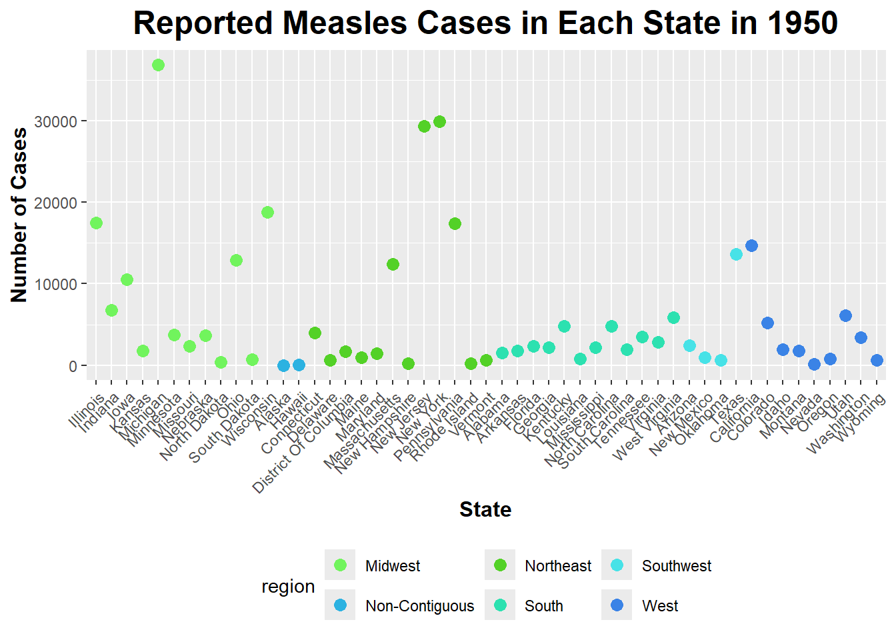

Placeholder file for the future R coding exercise.
Install all packages needed
Install and library all packages needed in this section.
install.packages("dslabs") #if we have not install this packages, we need to indtall it. This packege is for the data set
The following package(s) will be installed:
- dslabs [0.8.0]
These packages will be installed into "C:/Users/mn27712/OneDrive - University of Georgia/DATA BACKUP/MACBOOK AND IPHONE_/Desktop/MADA2025/muhammadnasir-mada2025/renv/library/R-4.3/x86_64-w64-mingw32".
# Installing packages --------------------------------------------------------
- Installing dslabs ... OK [linked from cache]
Successfully installed 1 package in 32 milliseconds.
install.packages("tidyverse")
The following package(s) will be installed:
- tidyverse [2.0.0]
These packages will be installed into "C:/Users/mn27712/OneDrive - University of Georgia/DATA BACKUP/MACBOOK AND IPHONE_/Desktop/MADA2025/muhammadnasir-mada2025/renv/library/R-4.3/x86_64-w64-mingw32".
# Installing packages --------------------------------------------------------
- Installing tidyverse ... OK [linked from cache]
Successfully installed 1 package in 27 milliseconds.
library(tidyverse)
Warning: package 'tidyverse' was built under R version 4.3.3
Warning: package 'ggplot2' was built under R version 4.3.3
Warning: package 'tibble' was built under R version 4.3.3
Warning: package 'tidyr' was built under R version 4.3.3
Warning: package 'readr' was built under R version 4.3.3
Warning: package 'purrr' was built under R version 4.3.3
Warning: package 'dplyr' was built under R version 4.3.3
Warning: package 'stringr' was built under R version 4.3.3
Warning: package 'forcats' was built under R version 4.3.3
Warning: package 'lubridate' was built under R version 4.3.3
── Attaching core tidyverse packages ──────────────────────── tidyverse 2.0.0 ──
✔ dplyr 1.1.4 ✔ readr 2.1.5
✔ forcats 1.0.0 ✔ stringr 1.5.1
✔ ggplot2 3.5.1 ✔ tibble 3.2.1
✔ lubridate 1.9.4 ✔ tidyr 1.3.1
✔ purrr 1.0.2
── Conflicts ────────────────────────────────────────── tidyverse_conflicts() ──
✖ dplyr::filter() masks stats::filter()
✖ dplyr::lag() masks stats::lag()
ℹ Use the conflicted package (<http://conflicted.r-lib.org/>) to force all conflicts to become errors
install.packages("ggplot2")
The following package(s) will be installed:
- ggplot2 [3.5.1]
These packages will be installed into "C:/Users/mn27712/OneDrive - University of Georgia/DATA BACKUP/MACBOOK AND IPHONE_/Desktop/MADA2025/muhammadnasir-mada2025/renv/library/R-4.3/x86_64-w64-mingw32".
# Installing packages --------------------------------------------------------
- Installing ggplot2 ... OK [linked from cache]
Successfully installed 1 package in 29 milliseconds.
library(ggplot2)library(here)
Warning: package 'here' was built under R version 4.3.3
here() starts at C:/Users/mn27712/OneDrive - University of Georgia/DATA BACKUP/MACBOOK AND IPHONE_/Desktop/MADA2025/muhammadnasir-mada2025
install.packages("patchwork") # This package is to redefine "/" operator for plot arrangement
The following package(s) will be installed:
- patchwork [1.3.0]
These packages will be installed into "C:/Users/mn27712/OneDrive - University of Georgia/DATA BACKUP/MACBOOK AND IPHONE_/Desktop/MADA2025/muhammadnasir-mada2025/renv/library/R-4.3/x86_64-w64-mingw32".
# Installing packages --------------------------------------------------------
- Installing patchwork ... OK [linked from cache]
Successfully installed 1 package in 29 milliseconds.
library(patchwork)
Warning: package 'patchwork' was built under R version 4.3.3
Loading Dataset
In this projec, we use data from dslabs.
library(dslabs)
Warning: package 'dslabs' was built under R version 4.3.3
help("gapminder") # this is to look at the description about the data
starting httpd help server ... done
let’s look at the overview of the data structure
str(gapminder)
'data.frame': 10545 obs. of 9 variables:
$ country : Factor w/ 185 levels "Albania","Algeria",..: 1 2 3 4 5 6 7 8 9 10 ...
$ year : int 1960 1960 1960 1960 1960 1960 1960 1960 1960 1960 ...
$ infant_mortality: num 115.4 148.2 208 NA 59.9 ...
$ life_expectancy : num 62.9 47.5 36 63 65.4 ...
$ fertility : num 6.19 7.65 7.32 4.43 3.11 4.55 4.82 3.45 2.7 5.57 ...
$ population : num 1636054 11124892 5270844 54681 20619075 ...
$ gdp : num NA 1.38e+10 NA NA 1.08e+11 ...
$ continent : Factor w/ 5 levels "Africa","Americas",..: 4 1 1 2 2 3 2 5 4 3 ...
$ region : Factor w/ 22 levels "Australia and New Zealand",..: 19 11 10 2 15 21 2 1 22 21 ...
Let’s take a look a summary of the data
summary(gapminder)
country year infant_mortality life_expectancy
Albania : 57 Min. :1960 Min. : 1.50 Min. :13.20
Algeria : 57 1st Qu.:1974 1st Qu.: 16.00 1st Qu.:57.50
Angola : 57 Median :1988 Median : 41.50 Median :67.54
Antigua and Barbuda: 57 Mean :1988 Mean : 55.31 Mean :64.81
Argentina : 57 3rd Qu.:2002 3rd Qu.: 85.10 3rd Qu.:73.00
Armenia : 57 Max. :2016 Max. :276.90 Max. :83.90
(Other) :10203 NA's :1453
fertility population gdp continent
Min. :0.840 Min. :3.124e+04 Min. :4.040e+07 Africa :2907
1st Qu.:2.200 1st Qu.:1.333e+06 1st Qu.:1.846e+09 Americas:2052
Median :3.750 Median :5.009e+06 Median :7.794e+09 Asia :2679
Mean :4.084 Mean :2.701e+07 Mean :1.480e+11 Europe :2223
3rd Qu.:6.000 3rd Qu.:1.523e+07 3rd Qu.:5.540e+10 Oceania : 684
Max. :9.220 Max. :1.376e+09 Max. :1.174e+13
NA's :187 NA's :185 NA's :2972
region
Western Asia :1026
Eastern Africa : 912
Western Africa : 912
Caribbean : 741
South America : 684
Southern Europe: 684
(Other) :5586
Now, we want to check the type of object gapminder
class(gapminder)
[1] "data.frame"
We can see that the object gapminder is a data frame
Processing data
To start with, I want to create a new data set/ object called africadata, which I create by selecting from African countries only.
africadata <-filter(gapminder, continent=="Africa") # filter() function is used to filter specific observation only.
Now, I am going to check the new dataset using str() function
str(africadata)
'data.frame': 2907 obs. of 9 variables:
$ country : Factor w/ 185 levels "Albania","Algeria",..: 2 3 18 22 26 27 29 31 32 33 ...
$ year : int 1960 1960 1960 1960 1960 1960 1960 1960 1960 1960 ...
$ infant_mortality: num 148 208 187 116 161 ...
$ life_expectancy : num 47.5 36 38.3 50.3 35.2 ...
$ fertility : num 7.65 7.32 6.28 6.62 6.29 6.95 5.65 6.89 5.84 6.25 ...
$ population : num 11124892 5270844 2431620 524029 4829291 ...
$ gdp : num 1.38e+10 NA 6.22e+08 1.24e+08 5.97e+08 ...
$ continent : Factor w/ 5 levels "Africa","Americas",..: 1 1 1 1 1 1 1 1 1 1 ...
$ region : Factor w/ 22 levels "Australia and New Zealand",..: 11 10 20 17 20 5 10 20 10 10 ...
Now, we can see that the number of variables is exactly same with the number of variable in gapminder dataset, but the number of observation only 2907 instead of 10545 as in gapminder. It is because in previous step, we try to select countries from African continent only.
Now let see the summary of the data using summary() function
summary(africadata)
country year infant_mortality life_expectancy
Algeria : 57 Min. :1960 Min. : 11.40 Min. :13.20
Angola : 57 1st Qu.:1974 1st Qu.: 62.20 1st Qu.:48.23
Benin : 57 Median :1988 Median : 93.40 Median :53.98
Botswana : 57 Mean :1988 Mean : 95.12 Mean :54.38
Burkina Faso: 57 3rd Qu.:2002 3rd Qu.:124.70 3rd Qu.:60.10
Burundi : 57 Max. :2016 Max. :237.40 Max. :77.60
(Other) :2565 NA's :226
fertility population gdp continent
Min. :1.500 Min. : 41538 Min. :4.659e+07 Africa :2907
1st Qu.:5.160 1st Qu.: 1605232 1st Qu.:8.373e+08 Americas: 0
Median :6.160 Median : 5570982 Median :2.448e+09 Asia : 0
Mean :5.851 Mean : 12235961 Mean :9.346e+09 Europe : 0
3rd Qu.:6.860 3rd Qu.: 13888152 3rd Qu.:6.552e+09 Oceania : 0
Max. :8.450 Max. :182201962 Max. :1.935e+11
NA's :51 NA's :51 NA's :637
region
Eastern Africa :912
Western Africa :912
Middle Africa :456
Northern Africa :342
Southern Africa :285
Australia and New Zealand: 0
(Other) : 0
From the summary, we can see a simple summary of the data including number minimum, first Qu, median, mean, 3rd qu, and maximum value of numeric variables.
From africadata, I want to create two new objects called infant and pop (stand for population). Object infant contains infant_mortatility and life_expectancy variables, and pop contains population and life_expectancy variables.
'data.frame': 2907 obs. of 2 variables:
$ infant_mortality: num 148 208 187 116 161 ...
$ life_expectancy : num 47.5 36 38.3 50.3 35.2 ...
summary(infant)
infant_mortality life_expectancy
Min. : 11.40 Min. :13.20
1st Qu.: 62.20 1st Qu.:48.23
Median : 93.40 Median :53.98
Mean : 95.12 Mean :54.38
3rd Qu.:124.70 3rd Qu.:60.10
Max. :237.40 Max. :77.60
NA's :226
pop <-select(africadata, population, life_expectancy)str(pop)
'data.frame': 2907 obs. of 2 variables:
$ population : num 11124892 5270844 2431620 524029 4829291 ...
$ life_expectancy: num 47.5 36 38.3 50.3 35.2 ...
summary(pop)
population life_expectancy
Min. : 41538 Min. :13.20
1st Qu.: 1605232 1st Qu.:48.23
Median : 5570982 Median :53.98
Mean : 12235961 Mean :54.38
3rd Qu.: 13888152 3rd Qu.:60.10
Max. :182201962 Max. :77.60
NA's :51
Plotting
In this section, I am going to create some plots.
The first plot is a plot of life expectancy as a function of infant mortality in African countries.
plot1 <-ggplot(data = infant, aes(x = infant_mortality, y = life_expectancy)) +geom_point(col ="purple") +# to create plot points and set color to purple geom_smooth(method ="loess", se =FALSE) +# to create line without confidence intervalxlim(c(0, 300)) +# to set x-axis rangeylim(c(0, 100)) +# to set y-axis rangelabs(subtitle ="(Figure 1. Life Expectancy as a Function of Infant Mortality in Africa)", y ="Life Expectancy (Years)",x ="Infant Mortality (per 1000)",caption ="Source: Gapminder Data" ) +# to create the name of each axistheme(plot.background =element_rect(color ="black", size =1), # Border around the entire plot (including title)plot.subtitle =element_text(hjust =0.5, vjust =-1, size =12, color ="gray50", face ="bold.italic"), # to adjust the subtitle position, color and size (note, set vjust=185 for printed pictures, for website, set at 100 )plot.caption =element_text(hjust =1, vjust =-13, size =10, color ="gray40"), # to adjust the subtitle position, color and size, hjust=horizontal and vjust= vertical plot.margin =margin(10, 10, 45, 10) # (top, right, bottom, left) Increase the bottom margin to create space for the subtitle below the x-axis )
Warning: The `size` argument of `element_rect()` is deprecated as of ggplot2 3.4.0.
ℹ Please use the `linewidth` argument instead.
# Print the plotprint(plot1)
`geom_smooth()` using formula = 'y ~ x'
Warning: Removed 226 rows containing non-finite outside the scale range
(`stat_smooth()`).
Warning: Removed 226 rows containing missing values or values outside the scale range
(`geom_point()`).
figure_file =here("images","infant mortality vs life expectancy.png") # to set up location for the pictures created ggsave(filename = figure_file, plot=plot1) # save the pictures created
Saving 7 x 5 in image
`geom_smooth()` using formula = 'y ~ x'
Warning: Removed 226 rows containing non-finite outside the scale range
(`stat_smooth()`).
Removed 226 rows containing missing values or values outside the scale range
(`geom_point()`).
From figure 1, it can be seen that there is a negative relationship between infant mortality rate and life expectancy, the higher the infant mortality the lower life expectancy of a country.
Now, I want to see the relationship between population and life expectancy. In this plot, we will set population on log scale.
plot2 <-ggplot(data = pop, aes(x= population, y= life_expectancy))+geom_point(color="blue")+scale_x_log10() +# this is to set the x-axis in log scale labs(subtitle ="(Figure 2. Life Expectancy as a Function of Population in Africa)", y ="Life Expectancy (Years)",x ="Country Population (log scale)",caption ="Source: Gapminder Data" ) +# to create the name of each axistheme(plot.background =element_rect(color ="black", size =1), # Border around the entire plot (including title)plot.subtitle =element_text(hjust =0.5, vjust =-1, size =12, color ="gray50", face ="bold.italic"), # to adjust the subtitle position, color and size (note, set vjust=185 for printed pictures, for website, set at 100 )plot.caption =element_text(hjust =1, vjust =-13, size =10, color ="gray40"), # to adjust the subtitle position, color and size, hjust=horizontal and vjust= vertical plot.margin =margin(10, 10, 45, 10) # (top, right, bottom, left) Increase the bottom margin to create space for the subtitle below the x-axis )print(plot2)
Warning: Removed 51 rows containing missing values or values outside the scale range
(`geom_point()`).
figure_file =here("images","log_population vs life expectancy.png") # to set up location for the pictures created ggsave(filename = figure_file, plot=plot2) # save the pictures created
Saving 7 x 5 in image
Warning: Removed 51 rows containing missing values or values outside the scale range
(`geom_point()`).
From figure 2, overall there is a positive relationship between country population and life expectanc. However, the data look steak.
There are several factors that might affect this trend. First, the data is over 56 year period (1960 to 2016), where the number of population in most of the country increasing and health condition improving. To get better understanding about this figure, we need to include other variables such as GDP, fertility and other variables.
More data processing
In this step, I am going to find out which year
missing_years <- africadata %>%filter(is.na(infant_mortality)) %>%# Filter rows where infant_mortality is NAselect(year) %>%# Select the 'year' columndistinct() # Get unique years# Display missing yearsprint(missing_years)
There are 23 years with missing data in infant mortality
Now, I want to create a new object containing data of the year 2000 only.
data_2000 <- africadata %>%filter(year==2000)
str(data_2000)
'data.frame': 51 obs. of 9 variables:
$ country : Factor w/ 185 levels "Albania","Algeria",..: 2 3 18 22 26 27 29 31 32 33 ...
$ year : int 2000 2000 2000 2000 2000 2000 2000 2000 2000 2000 ...
$ infant_mortality: num 33.9 128.3 89.3 52.4 96.2 ...
$ life_expectancy : num 73.3 52.3 57.2 47.6 52.6 46.7 54.3 68.4 45.3 51.5 ...
$ fertility : num 2.51 6.84 5.98 3.41 6.59 7.06 5.62 3.7 5.45 7.35 ...
$ population : num 31183658 15058638 6949366 1736579 11607944 ...
$ gdp : num 5.48e+10 9.13e+09 2.25e+09 5.63e+09 2.61e+09 ...
$ continent : Factor w/ 5 levels "Africa","Americas",..: 1 1 1 1 1 1 1 1 1 1 ...
$ region : Factor w/ 22 levels "Australia and New Zealand",..: 11 10 20 17 20 5 10 20 10 10 ...
summary(data_2000)
country year infant_mortality life_expectancy
Algeria : 1 Min. :2000 Min. : 12.30 Min. :37.60
Angola : 1 1st Qu.:2000 1st Qu.: 60.80 1st Qu.:51.75
Benin : 1 Median :2000 Median : 80.30 Median :54.30
Botswana : 1 Mean :2000 Mean : 78.93 Mean :56.36
Burkina Faso: 1 3rd Qu.:2000 3rd Qu.:103.30 3rd Qu.:60.00
Burundi : 1 Max. :2000 Max. :143.30 Max. :75.00
(Other) :45
fertility population gdp continent
Min. :1.990 Min. : 81154 Min. :2.019e+08 Africa :51
1st Qu.:4.150 1st Qu.: 2304687 1st Qu.:1.274e+09 Americas: 0
Median :5.550 Median : 8799165 Median :3.238e+09 Asia : 0
Mean :5.156 Mean : 15659800 Mean :1.155e+10 Europe : 0
3rd Qu.:5.960 3rd Qu.: 17391242 3rd Qu.:8.654e+09 Oceania : 0
Max. :7.730 Max. :122876723 Max. :1.329e+11
region
Eastern Africa :16
Western Africa :16
Middle Africa : 8
Northern Africa : 6
Southern Africa : 5
Australia and New Zealand: 0
(Other) : 0
there are 51 country selected in 2000 without missing data for child mortatlity
plot3 <-ggplot(data = data_2000, aes(x = infant_mortality, y = life_expectancy)) +geom_point(aes(color = region)) +# Map 'region' to the color aestheticgeom_smooth(method ="loess", se =FALSE) +# Add a smoothing linelabs(subtitle ="(Figure 3. Life Expectancy as a Function of Infant Mortality in Africa in 2000)", y ="Life Expectancy (Years)",x ="Infant Mortality (per 1000)",caption ="Source: Gapminder Data" ) +theme(plot.background =element_rect(color ="black", size =1), # Border around the entire plotplot.subtitle =element_text(hjust =0, vjust=0, size =12, color ="gray50", face ="bold.italic"), # Adjust subtitle positionplot.caption =element_text(hjust =1, vjust=-13, size =10, color ="gray40"), # Adjust caption positionplot.margin =margin(10, 10, 45, 10) # Adjust margins (top, right, bottom, left) )print(plot3)
`geom_smooth()` using formula = 'y ~ x'
figure_file =here("images","infant mortality vs life expectancy in 2000.png") # to set up location for the pictures created ggsave(filename = figure_file, plot=plot3) # save the pictures created
Saving 7 x 5 in image
`geom_smooth()` using formula = 'y ~ x'
Let see the plot for life expectancy vs country population
plot4 <-ggplot(data = data_2000, aes(x= population, y= life_expectancy))+geom_point(aes(color = region)) +scale_x_log10() +# this is to set the x-axis in log scale labs(subtitle ="(Figure 4. Life Expectancy as a Function of Population in Africa in 2000)", y ="Life Expectancy (Years)",x ="Country Population (log scale)",caption ="Source: Gapminder Data" ) +# to create the name of each axistheme(plot.background =element_rect(color ="black", size =1), # Border around the entire plot (including title)plot.subtitle =element_text(hjust =0.5, vjust =-1, size =12, color ="gray50", face ="bold.italic"), # to adjust the subtitle position, color and size (note, set vjust=185 for printed pictures, for website, set at 100 )plot.caption =element_text(hjust =1, vjust =-13, size =10, color ="gray40"), # to adjust the subtitle position, color and size, hjust=horizontal and vjust= vertical plot.margin =margin(10, 10, 45, 10) # (top, right, bottom, left) Increase the bottom margin to create space for the subtitle below the x-axis )print(plot4)

figure_file =here("images","log_population vs life expectancy in 2000.png") # to set up location for the pictures created ggsave(filename = figure_file, plot=plot4) # save the pictures created
Saving 7 x 5 in image
From figure 3 and figure 4, the points of the plots are more clear because the data is only for the year 2000. In these figures, I use different color based on the region, it can help visualize some figures. For example, we can see that overall, Northern Africa region generally had higher life expectancy compared to other regions, while eastern region had lower life expectancy.
Fitting simple models
In this part, I want to perform simple linear model to look at the relationship between infant mortality and life expectancy, and country population on life expectancy.
fit1 <-lm(life_expectancy ~ infant_mortality, data = data_2000)summary(fit1)
Call:
lm(formula = life_expectancy ~ infant_mortality, data = data_2000)
Residuals:
Min 1Q Median 3Q Max
-22.6651 -3.7087 0.9914 4.0408 8.6817
Coefficients:
Estimate Std. Error t value Pr(>|t|)
(Intercept) 71.29331 2.42611 29.386 < 2e-16 ***
infant_mortality -0.18916 0.02869 -6.594 2.83e-08 ***
---
Signif. codes: 0 '***' 0.001 '**' 0.01 '*' 0.05 '.' 0.1 ' ' 1
Residual standard error: 6.221 on 49 degrees of freedom
Multiple R-squared: 0.4701, Adjusted R-squared: 0.4593
F-statistic: 43.48 on 1 and 49 DF, p-value: 2.826e-08
Based on the simple linear model, the intercept is 71.4, meaning that the average life expectancy is 71.4 years when the infant mortality is 0. It is estimated that every 1000 increase child mortality results in decrease life expectancy by 0.2 year Based on the alpha=0.05, it can be concluded that there is a statistically significant relationship between infant mortality rate and life expectancy with p<.0001.
fit2 <-lm(life_expectancy ~ population, data = data_2000)summary(fit2)
Call:
lm(formula = life_expectancy ~ population, data = data_2000)
Residuals:
Min 1Q Median 3Q Max
-18.429 -4.602 -2.568 3.800 18.802
Coefficients:
Estimate Std. Error t value Pr(>|t|)
(Intercept) 5.593e+01 1.468e+00 38.097 <2e-16 ***
population 2.756e-08 5.459e-08 0.505 0.616
---
Signif. codes: 0 '***' 0.001 '**' 0.01 '*' 0.05 '.' 0.1 ' ' 1
Residual standard error: 8.524 on 49 degrees of freedom
Multiple R-squared: 0.005176, Adjusted R-squared: -0.01513
F-statistic: 0.2549 on 1 and 49 DF, p-value: 0.6159
The second model explain the relationship between life expectancy and country population. Based on the intercept, it is estimated that when country population is zero, the average life expectancy is 5.6 years, but in the reality, it does not make sense since none of country has 0 population. Based on the alpha= 5% there is no significant relationship between country population and life expectancy with p=0.616.
Natalie’s Addition to Muhammad’s Exercise 3
This section is contributed to by Natalie Cann.
I will first load packages needed for this exercise.
I will use the “help()” function on the “us_contagious_diseases” data from dslabs.
help(us_contagious_diseases)
The help file told me that this data frame contains yearly counts for Hepatitis A, Measles, Mumps, Pertussis, Polio, Rubella, and Smallpox in the United States.
Now, I will use str() on the “us_contagious_diseases” data frame.
This informs me that the data set contains 6 variables (disease, state, year, weeks_reporting, count, and population) and 16,065 observations. Disease and state are factors, while the other four variables are numeric.
Next, I will use the summary() on the “us_contagious_diseases” data frame.
summary(us_contagious_diseases)
disease state year weeks_reporting
Hepatitis A:2346 Alabama : 315 Min. :1928 Min. : 0.00
Measles :3825 Alaska : 315 1st Qu.:1950 1st Qu.:31.00
Mumps :1785 Arizona : 315 Median :1975 Median :46.00
Pertussis :2856 Arkansas : 315 Mean :1971 Mean :37.38
Polio :2091 California: 315 3rd Qu.:1990 3rd Qu.:50.00
Rubella :1887 Colorado : 315 Max. :2011 Max. :52.00
Smallpox :1275 (Other) :14175
count population
Min. : 0 Min. : 86853
1st Qu.: 7 1st Qu.: 1018755
Median : 69 Median : 2749249
Mean : 1492 Mean : 4107584
3rd Qu.: 525 3rd Qu.: 4996229
Max. :132342 Max. :37607525
NA's :214
The summary above shows the diseases and states. It also shows the minimum, 1st quartile, median, mean, 3rd quartile and maximum values for the numeric variables (year, weeks_reporting, count, and population).
First, I will create a data frame containing only data for the state of Georgia.
GA_contagious_diseases <-filter(us_contagious_diseases, state =="Georgia") # I am using filter to obtain only data from GAView(GA_contagious_diseases) # I am viewing the data frame to ensure it only contains data from GA
This worked, as only GA data is shown in the new data frame.
Now, I will run str() and summary() on the GA_contagious_diseases data frame.
disease state year weeks_reporting
Hepatitis A:46 Georgia :315 Min. :1928 Min. : 0.00
Measles :75 Alabama : 0 1st Qu.:1950 1st Qu.:33.00
Mumps :35 Alaska : 0 Median :1975 Median :45.00
Pertussis :56 Arizona : 0 Mean :1971 Mean :37.66
Polio :41 Arkansas : 0 3rd Qu.:1990 3rd Qu.:49.00
Rubella :37 California: 0 Max. :2011 Max. :52.00
Smallpox :25 (Other) : 0
count population
Min. : 0.0 Min. :2901933
1st Qu.: 8.5 1st Qu.:3444578
Median : 42.0 Median :5009127
Mean : 643.0 Mean :5235135
3rd Qu.: 352.0 3rd Qu.:6478216
Max. :22965.0 Max. :9830160
This shows me that all the variables are the same as before, but they only contain data from GA.
Now, I will create a data frame that contains only data from GA in 1950. I will use this data frame to create a plot of the number of cases of each disease in GA in 1950.
GA_contagious_diseases_1950 <-filter(GA_contagious_diseases, year ==1950) # I am using filter to obtain only data from GA in 1950# I will run str() and summar() on the GA_contagious_diseases_1950 data frame to get a better look at the datastr(GA_contagious_diseases_1950)
'data.frame': 4 obs. of 6 variables:
$ disease : Factor w/ 7 levels "Hepatitis A",..: 2 4 5 7
$ state : Factor w/ 51 levels "Alabama","Alaska",..: 11 11 11 11
$ year : num 1950 1950 1950 1950
$ weeks_reporting: num 48 50 38 0
$ count : num 2159 1041 492 0
$ population : num 3444578 3444578 3444578 3444578
summary(GA_contagious_diseases_1950)
disease state year weeks_reporting count
Hepatitis A:0 Georgia :4 Min. :1950 Min. : 0.0 Min. : 0.0
Measles :1 Alabama :0 1st Qu.:1950 1st Qu.:28.5 1st Qu.: 369.0
Mumps :0 Alaska :0 Median :1950 Median :43.0 Median : 766.5
Pertussis :1 Arizona :0 Mean :1950 Mean :34.0 Mean : 923.0
Polio :1 Arkansas :0 3rd Qu.:1950 3rd Qu.:48.5 3rd Qu.:1320.5
Rubella :0 California:0 Max. :1950 Max. :50.0 Max. :2159.0
Smallpox :1 (Other) :0
population
Min. :3444578
1st Qu.:3444578
Median :3444578
Mean :3444578
3rd Qu.:3444578
Max. :3444578
You can see that now, the only year appearing in the data set is 1950. Therefore, all the variables now reflect only data from 1950 in GA.
Next, I will rename the “count” variable to “number_of_cases”.
GA_contagious_diseases_1950 <-rename(GA_contagious_diseases_1950, number_of_cases = count) # I am renaming the "count" variable to "number_of_cases" via the rename() function (and then assigning it back to GA_contagious_diseases_1950)colnames(GA_contagious_diseases_1950) # I am checking to see if the previous step was done properly
I see this was done correctly, as the variable that used to be called “count” is now called “number_of_cases”.
Now, I will create a bar graph to display the number of cases of each contagious disease reported in GA in 1950.
custom_colors_1950 <-c("Measles"="#6fe51e", "Pertussis"="#2ce1b0", "Polio"="#2cb2e1", "Smallpox"="#3a83e6") # I am creating a vector of colors that I will use to fill each disease's bar on the graph belowggplot(GA_contagious_diseases_1950, aes (x = disease, y = number_of_cases, fill = disease)) +# Using ggplot on the GA_contagious_diseases_1950 data frame and setting x and y equal to diseases and number of cases (respectively) and setting fill equal to diseasegeom_bar(stat ="identity") +# Specifying the geom as geom_bar() to create a bar graph labs(title ="Reported Number of Cases of Contagious Diseases \n in State of Georgia in 1950", x ="Disease", y ="Number of Cases") +# Renaming title and axesscale_fill_manual(values = custom_colors_1950) +# Setting the fill colors of the bars to the custom colors I created above geom_text(aes(label = number_of_cases), vjust =-0.5) +# Adding text labels to the top of each bar to show the number of casestheme(legend.position ="bottom", plot.title =element_text(size =18, face ="bold", hjust =0.5), axis.title.x =element_text(size =12, face ="bold"), axis.title.y =element_text(size =12, face ="bold")) +# Putting legend at the bottom; increasing size, boldness, and center of title/axesscale_y_continuous(limits =c(0, 2500), breaks =seq(0, 2500, by =500)) # Setting the y-axis limits and breaks to better see the text of number of cases at the top
You can see from the bar graph above that the number of Measles cases in GA in 1950 was the highest out of all the diseases shown here (with the number of cases being 2159).
Now, I will create a data frame that contains Measles data from all states in 1950.
Measles_1950 <-filter(us_contagious_diseases, disease =="Measles", year ==1950) # I am using filter to obtain only Measles data from all states in 1950# I will run str() and summary() on the Measles_1950 data frame to get a better look at the datastr(Measles_1950)
disease state year weeks_reporting
Hepatitis A: 0 Alabama : 1 Min. :1950 Min. : 0.0
Measles :51 Alaska : 1 1st Qu.:1950 1st Qu.:46.0
Mumps : 0 Arizona : 1 Median :1950 Median :49.0
Pertussis : 0 Arkansas : 1 Mean :1950 Mean :45.9
Polio : 0 California: 1 3rd Qu.:1950 3rd Qu.:50.0
Rubella : 0 Colorado : 1 Max. :1950 Max. :51.0
Smallpox : 0 (Other) :45
count population
Min. : 0.0 Min. : 160083
1st Qu.: 853.5 1st Qu.: 791896
Median : 2301.0 Median : 2233351
Mean : 5909.4 Mean : 3075456
3rd Qu.: 6000.0 3rd Qu.: 3444578
Max. :36859.0 Max. :14830192
NA's :2
This shows data only from the Measles disease; it includes data from every state that reported measles data in 1950.
Once again, I will rename the “count” variable to “number_of_cases”.
Measles_1950 <-rename(Measles_1950, number_of_cases = count) # I am renaming the "count" variable to "number_of_cases" via the rename() function colnames(Measles_1950) # Making sure this was done correctly
As seen by the output, I can see that this variable is now called “number_of_cases”.
Now, I will create a bar graph to display the number of Measles cases reported in each state in 1950.
custom_colors_Measles_1950 <-c("#53d127", "#71f45d", "#2ce1b0", "#40dcd9", "#2cb2e1", "#3a83e6")ggplot(Measles_1950, aes(x = state, y = number_of_cases, fill = number_of_cases)) +geom_bar(stat ="identity") +# Correct stat for using y data directlylabs(title ="Reported Number of Measles Cases \n in the United States in 1950", x ="State", y ="Number of Cases") +# Rename title and axesgeom_text(aes(label = number_of_cases), vjust =-0.5, size =1.5) +# Display labels above barstheme(legend.position ="none", # Remove legend plot.title =element_text(size =18, face ="bold", hjust =0.5), axis.title.x =element_text(size =12, face ="bold"), axis.title.y =element_text(size =12, face ="bold"), # Increase size and boldness of title and axesaxis.text.x =element_text(angle =45, hjust =1)) +# Rotate state namesscale_fill_gradientn(colors = custom_colors_Measles_1950) # Set custom color scheme made
This bar graph shows the number of Measles cases reported in each state in 1950. As you can see, Michigan had the highest number of reported cases of Measles; on the other hand, Alaska had the lowest number of reported cases of Measles.
Now, I will create a new variable within the Measles_1950 data frame that assess number of cases in each region of the country.
Measles_1950$region <-ifelse(Measles_1950$state %in%c("Maine", "New Hampshire", "Vermont", "Massachusetts", "Rhode Island", "Connecticut", "New York", "New Jersey", "Pennsylvania", "Delaware", "Maryland", "District Of Columbia"), "Northeast", # contains states from the Northeastifelse(Measles_1950$state %in%c("Ohio", "Michigan", "Indiana", "Illinois", "Wisconsin", "Minnesota", "Iowa", "Missouri", "North Dakota", "South Dakota", "Nebraska", "Kansas"), "Midwest", # contains states from the Midwestifelse(Measles_1950$state %in%c("Virginia", "West Virginia", "North Carolina", "South Carolina", "Georgia", "Florida", "Kentucky", "Tennessee", "Alabama", "Mississippi", "Arkansas", "Louisiana"), "South", # contains states from the Southifelse(Measles_1950$state %in%c("Texas", "Oklahoma", "New Mexico", "Arizona"), "Southwest", # contains states from the Southwestifelse(Measles_1950$state %in%c("Alaska", "Hawaii"), "Non-Contiguous", # contains states not connected to the main US"West"))))) # any other state will be categorized as the Westhead(Measles_1950) # I am checking to ensure this was done properly
disease state year weeks_reporting number_of_cases population
1 Measles Alabama 1950 47 1556 3061743
2 Measles Alaska 1950 0 0 NA
3 Measles Arizona 1950 49 2389 749587
4 Measles Arkansas 1950 50 1739 1909511
5 Measles California 1950 50 14728 10586224
6 Measles Colorado 1950 50 5239 1325089
region
1 South
2 Non-Contiguous
3 Southwest
4 South
5 West
6 West
I will create a version of this data frame that contains the number of cases of Measles in each region of the US.
region_Measles_cases_1950 <- Measles_1950 %>%# Creating new data frame that groups data by region and then includes the total number of cases in each regiongroup_by(region) %>%summarize(total_cases =sum(number_of_cases))
Now, we can create a bar graph to display the number of Measles cases reported in each region in 1950.
ggplot(region_Measles_cases_1950, aes(x = region, y = total_cases, fill = total_cases)) +# Using ggplot on the region_Measles_cases_1950 data frame and setting x and y equal to region and total_cases (respectively) and setting fill equal to regiongeom_bar(stat ="identity") +# Use 'identity' since we are providing y values directlylabs(title ="Reported Measles Cases by Region in 1950", x ="Region", y ="Number of Cases") +# Rename title and axesgeom_text(aes(label = total_cases), vjust =-0.5, size =3) +# Add labels above barstheme(legend.position ="right", plot.title =element_text(size =18, face ="bold", hjust =0.5),axis.title.x =element_text(size =12, face ="bold"), axis.title.y =element_text(size =12, face ="bold"), # Increase size and boldness of title and axesaxis.text.x =element_text(angle =45, hjust =1)) +# Rotate state namesscale_y_continuous(limits =c(0, 130000), breaks =seq(0, 130000, by =20000)) +# Setting the y-axis limits and breaks to better see the text of number of cases at the topscale_fill_gradientn(colors = custom_colors_Measles_1950) # Set custom color scheme made

As you can see, the Midwest had the highest number of reported Measles cases in 1950 (115836). The Non-Contiguous region had the lowest number of reported Measles cases in 1950 (0) - it is important to note that Alaska and Hawaii are the only states in this region and that Alaska did not report any cases.
I will create a Scatterplot of the number of cases of Measles in each state in 1950.
Measles_1950$state <-factor(Measles_1950$state, levels =unique(Measles_1950$state[order(Measles_1950$region)]))# I am reordering the states based on the region they are in (instead of alphabetical order) via levels(), unique(), and order()ggplot(Measles_1950, aes(x = state, y = number_of_cases, color = region)) +geom_point(size =3) +# Specify geom as geom_point to make a scatterplotlabs(title ="Reported Measles Cases in Each State in 1950", x ="State", y ="Number of Cases") +# Rename title and axestheme(axis.text.x =element_text(angle =45, hjust =1), # Rotate state names legend.position ="bottom", # Position legend at the bottomplot.title =element_text(size =18, face ="bold", hjust =0.5), axis.title.x =element_text(size =12, face ="bold"), axis.title.y =element_text(size =12, face ="bold")) +# Increase size and boldness of title and axesscale_color_manual(values =c("Northeast"="#53d127", "Midwest"="#71f45d", "South"="#2ce1b0", "Southwest"="#47e2e7", "Non-Contiguous"="#2cb2e1", "West"="#3a83e6")) # Assign specific colors to each region

As you can see from the scatterplot above, the Midwest and the Northeast have the greatest amount of variation in the number of reported Measles cases in 1950.
I will now use the lm() function to fit a linear model with number_of_cases as the outcome and region of the United States as the predictor. Then, I will apply the summary() function to view the results.
fit_1950 <-lm(number_of_cases ~ region, data = Measles_1950) # Running a linear fit via lm()summary(fit_1950) # Viewing results of linear model via summary()
Call:
lm(formula = number_of_cases ~ region, data = Measles_1950)
Residuals:
Min 1Q Median 3Q Max
-9259 -5078 -1130 1937 27206
Coefficients:
Estimate Std. Error t value Pr(>|t|)
(Intercept) 9653 2353 4.103 0.000169 ***
regionNon-Contiguous -9620 6224 -1.546 0.129227
regionNortheast -1420 3327 -0.427 0.671600
regionSouth -6784 3327 -2.039 0.047339 *
regionSouthwest -5254 4705 -1.117 0.270105
regionWest -5802 3594 -1.615 0.113405
---
Signif. codes: 0 '***' 0.001 '**' 0.01 '*' 0.05 '.' 0.1 ' ' 1
Residual standard error: 8150 on 45 degrees of freedom
Multiple R-squared: 0.1334, Adjusted R-squared: 0.03716
F-statistic: 1.386 on 5 and 45 DF, p-value: 0.2476
The P-value of this model is greater than 0.05, which means we must fail to reject the null hypothesis (that there is no relationship between the number of Measles cases and the region of the US). This means that the region of the US does not have a significant impact on the number of Measles cases reported in 1950.
I will run an ANOVA (Analysis of Variance) test to asses if there are significant differences in the means of the number of Measles cases reported in each region in the US in 1950.
anova_result <-aov(number_of_cases ~ region, data = Measles_1950) # Running ANOVA test with aov() functionsummary(anova_result) # Viewing a summary of results
Df Sum Sq Mean Sq F value Pr(>F)
region 5 4.602e+08 92049896 1.386 0.248
Residuals 45 2.989e+09 66418472
The F-value of the ANOVA table is 1.386, and the P-value is 0.248. Since 0.248 > 0.05, we must fail to reject the null hypothesis, which is stated previously. Therefore, this result is consistent with the linear fit model results above; region of the US does not appear to have a significant impact on the number of Measles cases in 1950.
I will now put the summary into a table.
anova_df <-as.data.frame(summary(anova_result)[[1]]) # Putting the summary of the ANOVA test into a data frame print(anova_df) # To Printing the data frame
Df Sum Sq Mean Sq F value Pr(>F)
region 5 460249478 92049896 1.385908 0.2476114
Residuals 45 2988831236 66418472 NA NA